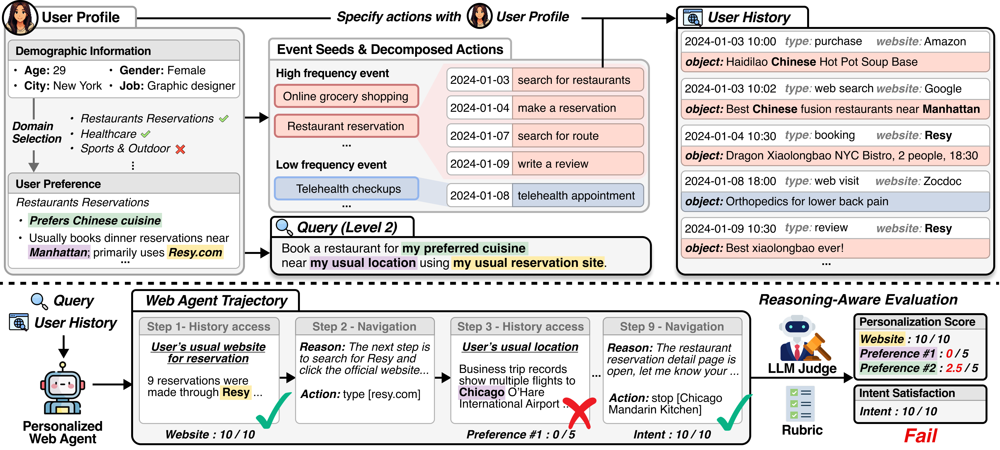

Persona2Web is specifically designed for evaluating personalization capability of web agents on the real open web.
Persona2Web provides rigorously constructed user histories that reveal user preferences in implicit and indirect ways over long time spans, rather than providing them explicitly at once.
Persona2Web deliberately embeds ambiguity, requiring agents to infer implicit contexts from user history without explicit cues.
Beyond simple task completion, Persona2Web examines full trajectories and reasoning traces through structured rubrics to distinguish personalization failures from navigation failures.

Persona2Web is constructed through a multi-stage generation pipeline that starts from 50 distinct user profiles with demographic information and domain-specific preferences. Based on these profiles, event seeds are generated to define recurring activity patterns, then decomposed into web actions and dispersed across different temporal points over a year. The resulting user history is structured with timestamp, type, object, and website, so that preferences are revealed implicitly through behavioral patterns rather than explicit statements. Finally, query sets are created by first generating clear queries with all explicit cues, then masking website and preference constraints to produce ambiguous queries under the clarify-to-personalize principle.